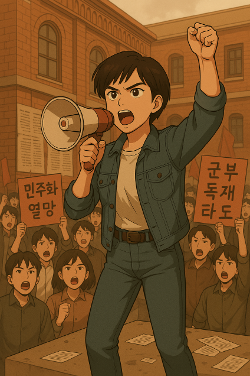

얼마간의 휴식 뒤에 모두 밖으로 나갔다. 그리고 시위를 다시 시작했다. 이미 많은 사람들이 모여있었고 박민주 아저씨가 무대 위로 올라와서 외치기 시작했다.
"여러분, 더이상의 간선제 대통령 선출은 안됩니다."
"우리의 대통령은 우리 손으로 뽑아야 합니다."
"직선제로 민주정부를 만들어야 합니다." "와~~ 톡재타도! 독재타도!"
사람들이 환호하며 구호를 외친다.
시위에 참여한다.
시위에 참여하지 않는다.